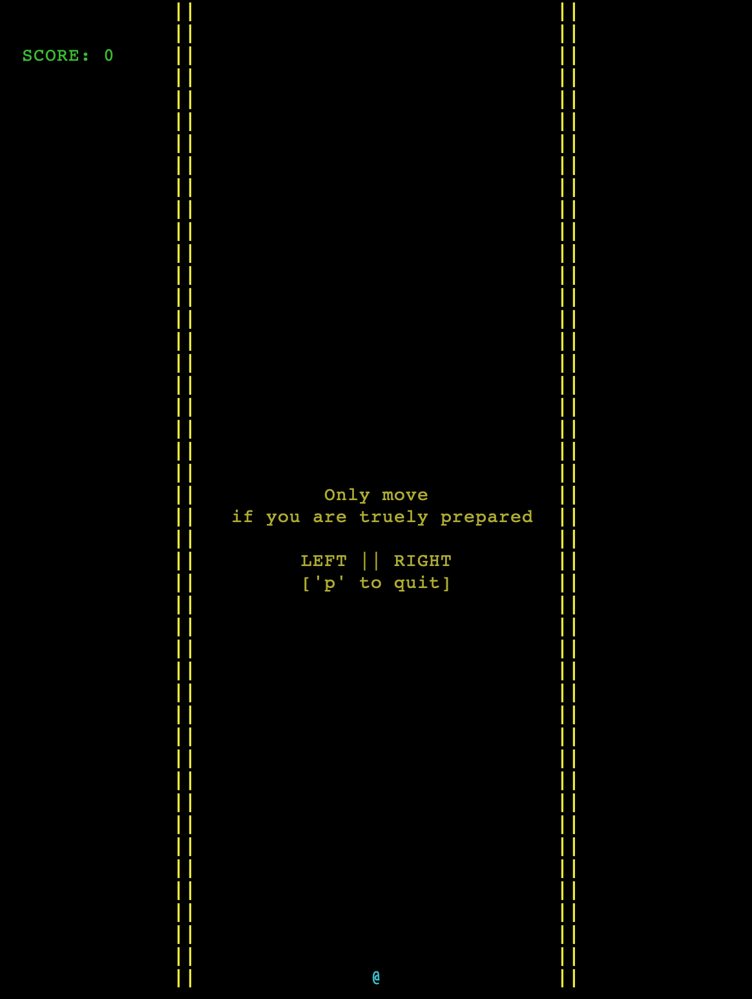

WorkSpaces
Why?
Started as a project for my UNIX class with a prompt from the professor "Make something that uses curses and gdbm. Grade based on impression", I found myself get sucked in by its potential, of all the things I could come up with to add in this game. Even after my submission, I still continued developing, coming up with new ideas to make the game fun and unpredictable. I eventually slowed down on making new updates, but still have in mind a many more ideas to expand the game.
A simple game that is constructed with the principle of Object Oriented Design in mind. It is made to be able to integrate with further development, functions, modes, etc.
It can be used as a helpful tool to teach programming due to its simplicity and great potential. Dodge is easy to understand, easy to integrate, leaving room for everyone to meddle around with their own creativity.
Prerequisites
First you have to install gdbm for database and ncurses for graphics. Open your Terminal, run:
brew install ncurses
brew install gdbmGetting Started
Clone the project to where you want to have it on your local machine
Running
After cloning the project, inside the directory by
cd UNIX/DodgeFor the first time running, type
makeNow, everytime you want to play, just have to type
./gameDodge
PC mode

Dual Players Mode
Enjoy the game!
Versions
- Version 2.0: Major update release.
- Featuring dual players mode
- Fixed database error that caused it to run out of memory
- Fixed speed transition to make its increasement smoother
- Version 2.1: Minor bugs fixed